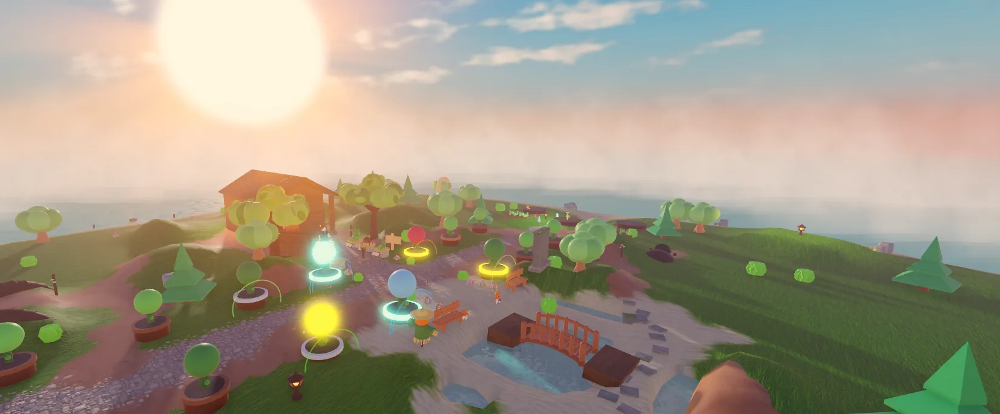

Plant defenders
Sprout Shooter, Thorn Bush, Frost Bloom, Bomb Berry, Sun Lily, Snare Vine — seeds that wake up and fight. Place them along the path and level them up.

A garden tower defense on Roblox
Old Fennick kept this garden for years, until one autumn night he lit every lantern and was gone. Now you are the new Keeper.
Free · PC, phone and tablet · for now open to players 16+ with a Roblox age check
By day you garden: plant, water, harvest, decorate. At sunset the burrows on the north beach start to hum, and at midnight the Riot pours out — critters racing down the path for your garden's glowing Heart.
They never hurt you. They are after something. Every Keeper finds different pages of the story, so nobody holds all of it, and the night sky keeps count of what you have found.
Sprout Shooter, Thorn Bush, Frost Bloom, Bomb Berry, Sun Lily, Snare Vine — seeds that wake up and fight. Place them along the path and level them up.
Each Riot is one night. Hold the Heart until dawn with your defenders and Fennick's old tools: the Rake, the Slingshot and the Watering Can. Every 5th night, a boss.
37 hidden fragments around the island: the old pier, the burrow, the cliff where roots break through. Twelve stars in the sky light up as you find them.


Until now the garden only gave. Under the fifth pedestal someone carved an arrow pointing down and one word: GIVE.
Read more →The garden has nights now. Every Riot comes at midnight: the sun sets while you garden, and dawn only comes after you hold the night.
Read more →Far out in a warm sea grows a garden that grows too fast. Old Fennick kept it for years — until one autumn night he lit every lantern and was gone.
Read more →Found a secret? Tell other Keepers in our Roblox community or on Discord. Nobody holds them all.